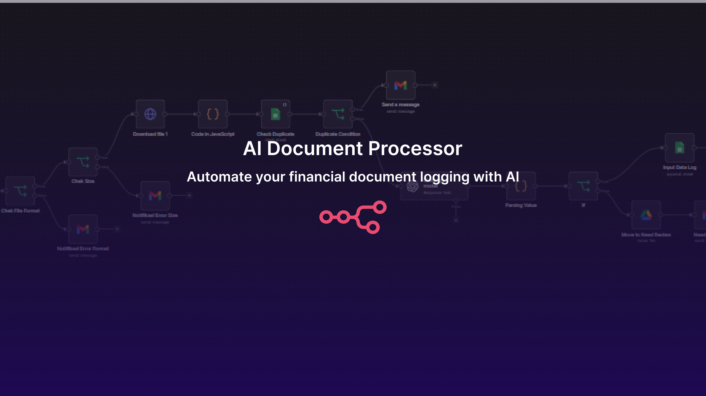

AI Document Processor – Automated Financial Document Logging

Ringkasan Project
AI Document Processor adalah sistem otomasi yang menangani proses pencatatan dokumen keuangan secara end-to-end. Mulai dari menerima dokumen, membaca isinya, mengekstrak informasi penting, hingga mencatatnya ke dalam spreadsheet — seluruhnya berjalan otomatis tanpa perlu input manual dari staff keuangan.
Sistem ini memantau folder Google Drive secara real-time. Setiap kali ada dokumen baru yang di-upload — baik itu invoice, nota, kwitansi, atau faktur pajak — AI langsung membaca dan mengekstrak data seperti nama vendor, nomor dokumen, tanggal, nominal, pajak, dan jatuh tempo. Data tersebut kemudian dicatat otomatis ke Google Sheets.
Sebelum dokumen diproses, sistem menjalankan beberapa validasi secara otomatis. Format file diperiksa untuk memastikan hanya dokumen yang didukung yang masuk ke proses. Ukuran file dibatasi agar tidak membebani sistem. Dan pengecekan duplikat dilakukan agar tidak ada dokumen yang tercatat dua kali. Jika ada yang tidak lolos validasi, sistem langsung mengirim notifikasi email yang menjelaskan alasan penolakannya.
Tidak semua dokumen bisa dibaca dengan sempurna oleh AI — ada kalanya scan buram atau format tulisan yang sulit dikenali. Untuk menangani ini, setiap dokumen diberi confidence score. Jika skornya tinggi, data langsung dicatat otomatis. Jika skornya rendah, dokumen dipindahkan ke folder terpisah dan tim keuangan mendapat notifikasi untuk melakukan review manual. Dengan mekanisme ini, tidak ada data yang masuk tanpa quality check.
Dari sisi dampak, proses yang sebelumnya memakan waktu 3–5 menit per dokumen secara manual kini selesai dalam hitungan detik. Untuk perusahaan yang memproses puluhan dokumen setiap hari, ini berarti penghematan waktu kerja yang signifikan — waktu yang sebelumnya habis untuk mengetik data kini bisa dialokasikan ke pekerjaan yang lebih membutuhkan keahlian, seperti analisis keuangan atau perencanaan cash flow.